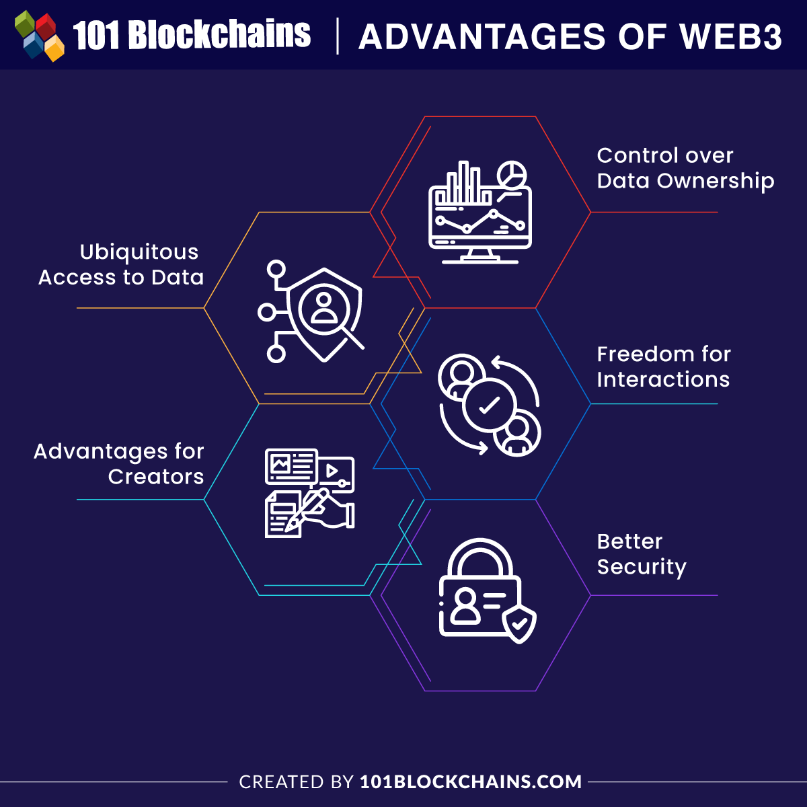

Web 3.0 focuses on machine-readable data and specialization, often referred to as the Semantic Web[cite: 168, 169]. It makes the web more meaningful and personalized through enhanced data connectivity[cite: 171].
This era is defined by the integration of technologies like Blockchain and AI, moving toward a "Read-Write-Execute" or decentralized framework[cite: 169, 174].
